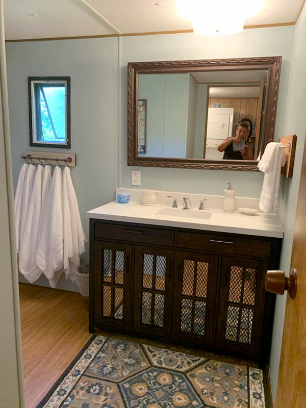

Why Do Guests Choose J&S Creekside Cabins for Their Catskills Stay?
Guests choose J&S Creekside Cabins because the property delivers what matters most in a cabin rental: clean rooms, direct creek access, and owners who genuinely care about the quality of each stay. The Willowemoc Creek runs directly alongside the property, giving every guest immediate access to fishing, wading, and the calming sound of flowing water throughout their visit. Unlike larger operations that manage dozens of units remotely, J&S Creekside Cabins maintains a personal presence on site, ensuring that questions are answered promptly and any issue is resolved the same day. Cabin rentals in the Catskills are only as good as the people behind them, and the family behind this Livingston Manor property has earned the trust of returning visitors across Sullivan County and beyond. Visit J&S Creekside Cabins at 12 Wegman Rd, Livingston Manor, NY 12758 or call (607) 242-2960 today
What Services and Accommodations Does J&S Creekside Cabins Offer?
J&S Creekside Cabins offers a range of cabin sizes suited to couples, families, and small groups looking for cabin rentals in the Catskills with all the essentials included. Each cabin comes equipped with linens, kitchenware, heating, hot water, and outdoor seating areas for enjoying the Livingston Manor scenery. The property provides creek-front access for fly fishing and recreation, fire pits for evening gatherings, and enough space between units to maintain privacy during your stay. Whether you are booking a weekend getaway or a longer seasonal rental, the accommodations are designed to keep you comfortable while the Catskill Mountains provide the backdrop. explore our first-timer's guide to cabin bookings

Our Commitment to the Livingston Manor Community and Catskills Region
J&S Creekside Cabins operates as part of the Livingston Manor community, not separate from it. The property supports local businesses by recommending Sullivan County restaurants, fly shops, and attractions to every guest who asks. Maintaining the creek-front environment and contributing to the responsible stewardship of the Willowemoc corridor is part of the daily work that happens behind the scenes. Cabin rentals in the Catskills thrive when the properties that host visitors also invest in the health of the landscape and the vitality of the local economy. J&S Creekside Cabins is committed to both, and that commitment shapes every aspect of how the property is run.